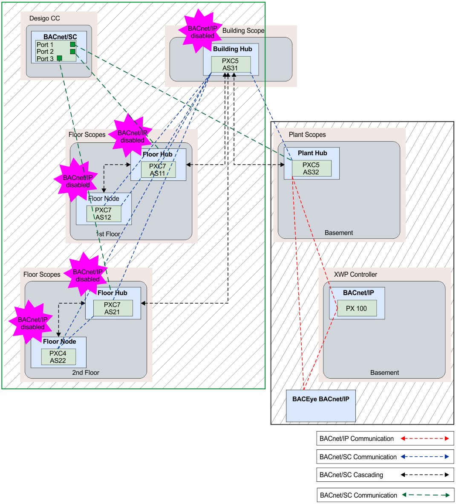

Integrating Desigo CC in the BACnet/SC network
Desigo CC 集成在适用的地板轮毂上。必须在 Desigo CC 中为每个楼层集线器设置单独的端口。这优化了 Desigo CC 和楼层集线器之间的数据流量。不要集成建筑中心，因为这会通过建筑中心路由所有数据流量并导致数据过载。
Create a BACnet/SC network topology building and floor hub

Status of BACnet/SC implementation | ||
|---|---|---|
| BACnet/IP | BACnet/SC compliant |
Building hub | No | 是的 |
地下室（工厂中心） | 是的 | No |
XWP controller | 是的 | No |
1. floor | No | 是的 |
2. floor | No | 是的 |
Desigo CC | No | 是的 |